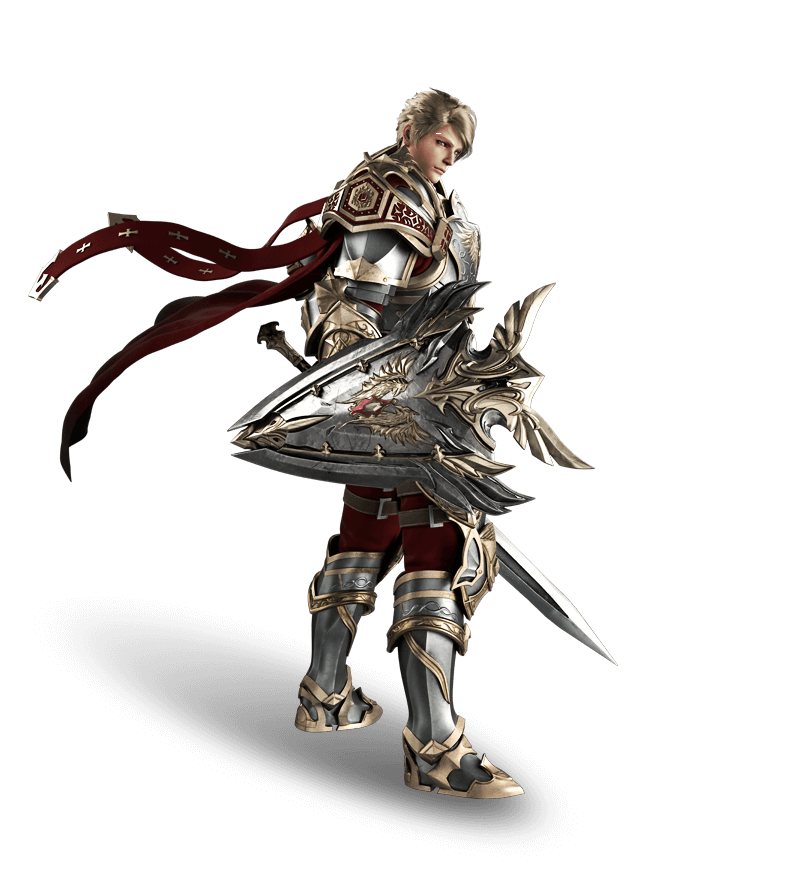
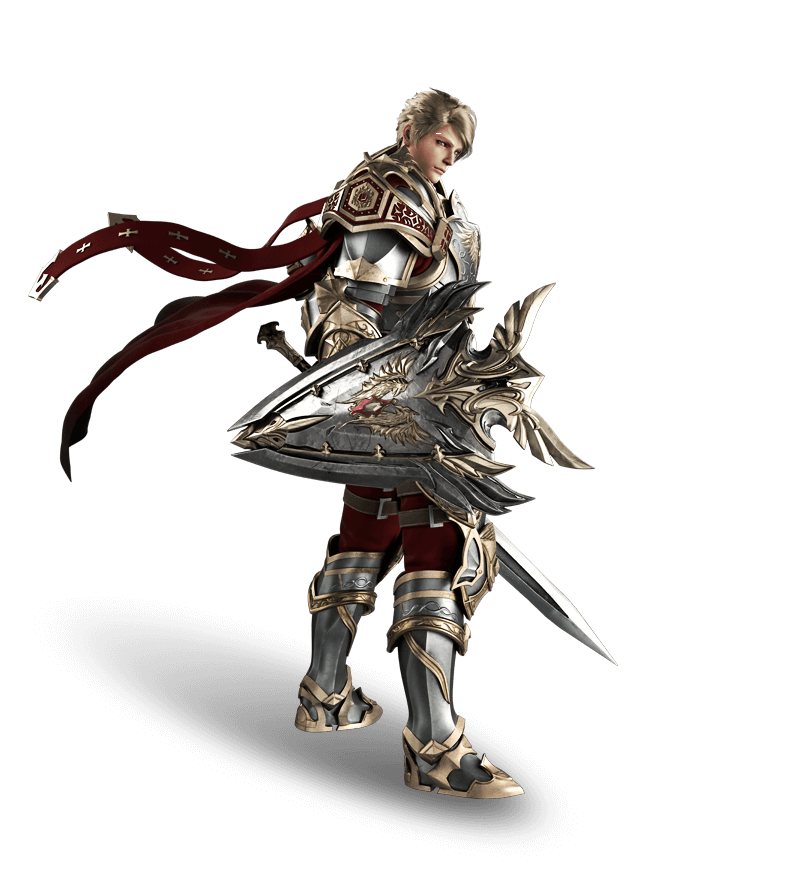

Reglas de la Comunidad
La Comunidad de LINEAGE 2 LATINO (en adelante, “la Comunidad”), el presente acuerdo establece los términos y condiciones que rigen el uso y participación en nuestras plataformas. El vocablo “plataformas” incluye -y no se limita a- la página de cualquier red social empleada, discord, el servidor de Lineage II y el empleo del cliente mediante el cual se accede al mismo. La falta de aceptación y cumplimiento del presente, así como de su(s) anexo(s), implica la prohibición de acceder al servidor.
I. Capacidad. Solo podrán acceder a nuestras plataformas aquellas personas que hubieran alcanzado la mayoría de edad en las respectivas normativas, de sus países de residencia. Caso contrario, el acceso será bajo responsabilidad de sus padres/tutores. Asimismo, se verán limitados a participar las personas cuya capacidad de hecho o derecho se encuentre limitada, sea parcial o totalmente.
II. Principio de gratuidad. La Comunidad, no tiene fines de lucro, el acceso a las plataformas es libre y gratuito, y solo se encuentra supeditado al cumplimiento de los -aquí detallados- términos y condiciones. Por lo tanto, cualquier contribución que se desee realizar, será en carácter de donación. Es decir, sin contraprestación alguna, ya que cualquier recompensa será entregada en carácter de agradecimiento simbólico, por la contribución realizada. Ningún bien o servicio que fuera proveído por parte de la Comunidad será a titulo oneroso, ni tampoco se requerirá el pago de ninguna suma para el acceso a las diferentes plataformas ofrecidas.
III. Plazo de duración. El proyecto es sustentado por la inversión (de tiempo y dinero) de la administración (de ahora en más llamada “el staff”) y de los usuarios, consiguientemente depende exclusivamente de ello para su supervivencia, por lo cual su duración es indeterminada y requiere de los aportes de los diferentes actores que la componen.
IV. Registración y protección de los datos personales. Toda la información del usuario, incluyendo y no limitándose a: nombres, documentos, direcciones de correo electrónico, números de teléfono, etc. No será compartida ni compartida a nadie fuera de la administración. En caso de desear la eliminación de ella, podrá ser requerido al staff.
V. Modificación de términos y condiciones. Los presentes términos y condiciones se encuentran sujetos a la posibilidad de modificaciones -totales o parciales- lo cual será anunciado y debidamente notificado por las diferentes plataformas de comunicación (website, redes sociales, dentro del juego). En el caso, corre la presunción de que quien continúa realizando uso y goce de las diferentes plataformas, los acepta en su totalidad y sin ninguna observación. Caso contrario, el usuario podrá solicitar la eliminación de todos los datos guardados en la base de datos, como se establece en el punto precedente.
VI. Obligaciones de las partes. Los usuarios se obligan a: a) Realizar un uso correcto de las diferentes plataformas; b) Respetar el código de conducta contenido en el anexo; c) No explotar fallos del juego (bugs) ya sea para su beneficio o para perjudicar al servidor o a terceros; d) Reportar la existencia de fallos del juego, lo cual será recompensado debidamente, a los fines de poder perseguir su reparación. Por otro lado, el staff del servidor se compromete a hacer el mayor esfuerzo posible por mantener las mejores condiciones de jugabilidad, el respeto a las normas contenidas en el Código de Conducta, con total imparcialidad y sin interferir en el desarrollo normal del juego. En el caso de realizar una donación, el usuario se compromete a realizar medios de pago propios, o con la autorización del titular. Ya que él será el responsable en caso de incurrir en la utilización no autorizada de tarjetas de crédito y/o débito.
VII. Accesos no autorizados. Queda prohibido el acceso no autorizado tanto a los diferentes dispositivos empleados para funcionamiento del servidor, como también a las cuentas del staff y/o los usuarios, incluyendo pero no limitándose a la posibilidad del empleo de herramientas de hacking y/o pishing. El caso de la comisión de lo referido, podrá acarrear consecuencias legales.
VIII. Sujeción del acceso a las plataformas al respeto del Código de Conducta. En caso de incumplimiento a la normativa de conducta, se podrán aplicar sanciones temporales o permanentes, que limiten el acceso de forma total o parcial. La creación de la cuenta queda supeditada a la aceptación de la reglamentación presente (lo que incluye su anexo), por lo tanto, alegar su desconocimiento no exime de la responsabilidad de quien lo incumpla.Lineage II Latino repudia cualquier tipo de violencia, sean mediante -pero no limitándose a- insultos, amenazas, tratos discriminatorios, xenófobos, sean ellos motivados por cualquier razón. En el caso de encontrarse frente a una situación de las antes mencionadas, podrá -y deberá- recurrir a cualquiera de los miembros del staff, por las vías indicadas al pie de éste reglamento. Mediante el reporte de una situación del estilo, se inicia el proceso de evaluación de la conducta contraria al reglamento, finalizando -de corresponder- con la sanción de las personas que incurrieran en el mismo. Como ya se mencionara, no se tolerará ningún tipo de maltrato hacia otras personas. Si bien esto se puede dar en el marco de un juego, donde es común que existan ciertas incitaciones o burlas de índole inofensivo, se encuentra absolutamente prohibida cualquier conducta que exceda de esos parámetros. El limite entre esto puede ser difuso en algunas ocasiones, pero en ese caso se los exhorta a evitar los comentarios discriminatorios.
IX. Exención de responsabilidad por actos realizados por el usuario y por fuerza mayor. El staff no se hará responsable en caso de que los usuarios brinden su información personal a terceros, debido a que la cuenta tiene el carácter de personal y es intransferible. En consecuencia, cualquier perjuicio sufrido a causa del incumplimiento del deber de cuidado, inherente a cada usuario, significará la imposibilidad de mantener su indemnidad. El staff no requerirá la información de acceso del usuario, salvo casos extraordinarios, y en dicha situación lo hará por las vías que garanticen su legitimidad, acreditando su identidad mediante comunicación con insignias oficiales (e.g. utilización de los perfiles oficiales de GameMaster). De otra parte, no nos haremos responsables por cambios o problemas fuera de nuestro control, sea por intervención de terceros o por la naturaleza.
X. Fallos del sistema y limitación de responsabilidad. El staff no se hará responsable por ningún tipo de falla del sistema en el cual se corre el juego, debido a que la convervación del mismo es exclusiva carga del titular. En el caso de dudas respecto de como optimizarla utilización del juego, podrá realizarse por las vías oficiales destinadas a ese fin (Facebook, discord, etc.).
XI. Propiedad intelectual. Todos los logos, así como la marca de Lineage II, son propiedad intelectual de la empresa NCSoft.
XII. Latino Lineage 2 es una Plataforma Publica de Testeo (PTS). El uso del servicio es solo para fines informativos.
XIII. Medios de contacto. Cualquier inquietud o consulta, podrá ser evacuada por medio del enlace de soporte en nuestra web.
Anexo I: Código de Conducta
Principio general: Serán penalizadas todas aquellas acciones u
omisiones que atenten contra la comunidad, otros usuarios, y/o el
correcto funcionamiento del servidor.
La Comunidad de Lineage II Latino, podrá limitar total o
parcialmente el acceso a las plataformas, dependiendo de si se
incurre en faltas leves o graves, siendo algunas de ellas:
En el caso de incurrir en una falta, será especialmente considerado
a aquel que lo asuma, sea previa o posteriormente a que se aplique
una sanción. En estos casos, se tendrá especial apreciación a la
demostración de arrepentimiento y la conducta general del usuario en
la comunidad.
I. Faltas relacionadas al staff u otros usuarios.
Art. 1. Insultos o faltas de respeto a los miembros del staff, que pueden incluir acusaciones sin sustento respecto de parcialidad y/o favorecimiento a otros usuarios. En caso de tener sospechas respecto de eso, deberá ser comunicado al Administrador, a los fines de que pueda realizar la investigación correspondiente. Su realización significa una falta grave, pudiéndose aplicar la prohibición permanente de acceso al juego. En este punto debe considerarse, que toda acusación daña la imagen del staff, y significa una cuestión muy seria que compromete a la vitalidad del mismo, por lo tanto deberá llevarse a cabo de manera tal que permita formar la pesquisa correspondiente, de manera exhaustiva y seria.
Art. 1 bis. No deberán pedirse items, nivel, o ningún tipo de beneficio o dadiva a los miembros del staff. Esto será penalizado con desconexión y/o penalidades más graves en caso de reincidencia.
Art. 2. Serán sancionados los Insultos, discriminación, xenofobia o
cualquier tipo de agresión contra un jugador. En el caso, deberá
reportarse inmediatamente al staff, acompañando una impresión de
pantalla no editada. Lo denunciado se constatará mediante la
inspección de los registros del chat, y la sanción podrá comprender
jail o una suspensión permanente en caso de casos reiterados o de la
gravedad de la ofensa que se tratare.
De la misma manera, serán eliminados los personajes que posean
nombres ofensivos, pudiendo el dueño solicitar al staff la
modificación del mismo.
Art. 3. Pretender formar parte del staff, con o sin la intención de obtener un beneficio y/o de generar un perjuicio, significa una falta grave que podrá ser penalizada con la exclusión permanente.
Art. 4. No está permitido el empleo de personajes con una diferencia
de nivel ampliamente superior (más de 10 niveles superior a la zona
correspondiente), para entorpecer el juego de aquellos que se
encuentran en inferioridad de condiciones. El que lo haga, podrá ser
trasladado temporalmente a la cárcel.
A los efectos del artículo, podrá entenderse “entorpecimiento” como
alguna (pero no limitándose a) de las siguientes actitudes: a)
Asesinar (pk) o pelear con un jugador en una zona de farmeo de 8
niveles inferior al del que lo lleva a cabo; b) Matar a los mobs de
la zona a los fines de imposibilitar el farm/entrenamiento de los
jugadores; c) Pretender (sea con equipo de otro nivel o utilizando
ropa y arma de grados inferiores) ser del nivel de la zona, con el
objetivo de inducir al jugador a flagearse (ponerse violeta) para
poder matarlo; d) Interferir en el pvp de players de nivel inferior,
matando jugadores.
Art. 5. Deberá evitarse el “flood” (uso excesivo de los canales globales de comunicación), así como el bloqueo de npc’s. Ello podrá acarrear la desconexión.
Art. 6. Los asedios son una dinámica principal del juego, donde se
promueve la participación de todos los miembros de la comunidad. Por
lo tanto, no se podrá realizar monopolio de castillos mediante el
empleo de clanes secundarios, (se toma por clan secundario a un clan
con menos 9 players (ips diferentes) por parte de grupos que ya
posean un castillo o no. En su caso, se removerá el señorío, y se
podrá aplicar sanciones temporales y/o permanentes en caso de
reincidencia. Se tendrá en cuenta, para la determinación de la
medida a adoptar, la capacidad de desenvolvimiento de todos los
clanes.
En ese sentido, será sancionado con jail y/o imposibilidad de acceso
temporal a la cuenta que se anota o a la/s del/los responsable/s del
clan principal, el mero registro si no se cumple con los requisitos
estipulados en el párrafo precedente. Ello tiene su fundamento en
que el mero registro genera un impacto en el servidor (spawn de
guardias, limitaciones en el uso de las gks, ocupación por parte del
staff a la revisión de los clanes atacantes). A su vez para que
todos los clanes tengan las mismas posibilidades: los Clanes que no
sean activos con ips unicas, no podran poseer Clan Halls. (de
poseerlos seran quitados)
II. Faltas relacionadas al desenvolvimiento del juego.
Art. 7. La explotación de bugs (fallas del juego), será considerada una falta grave, ya que rige la obligación de reportar los fallos al staff. La infracción se considera una falta grave, pudiendo acarrear la prohibición de acceso temporal o permanente. Por el contrario, el reporte conllevará una recompensa representativa.
Art. 8. La utilización de programas ajenos al juego, pudiendo ser -pero no limitandose a- bots (software de automatización de funciones), significará el envío a la cárcel del ofensor (los admines puede utilizar diferentes metodos como sumonear mobs, cambiarle el target, testear la automatizacion del mismo), y su segunda reincidencia será equivalente a la prohibición permanente de acceso a la cuenta.
Art. 9. El empleo de diferentes medios para la obtención de recompensas significativas (mas de 8 diarias) en el sistema de votos, significará la prohibición permanente de acceso a la cuenta.
III. Actividades prohibidas.
Art. 10. La promoción de otros servidores y/o juegos, significará una falta grave, sancionable con la eliminación de la cuenta.
Art. 11. Esta vedada la venta de artículos del juego (fuera del comercio del mismo), para ambas partes. El incumplimiento de esta norma significa la exclusiva responsabilidad del comprador y/o vendedor en el caso de perdida de dinero e ítem. Asimismo, serán susceptibles de que se elimine sus cuentas permanentemente (se toma en cuenta ip logueado y Email de creacion de cuentas vinculante) .